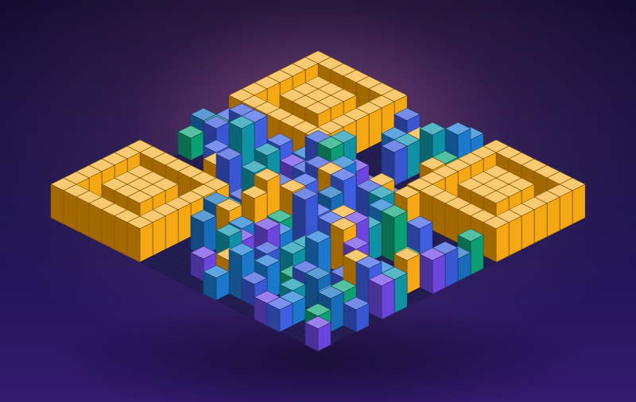

링크를 빌딩숲 QR 아트로
세워보세요
Building QR은 평범한 QR 코드를 스캔 가능한 3D 도시 스카이라인으로 바꿔주는 생성기입니다. 어두운 모듈은 빌딩으로 솟고, 밝은 모듈은 거리가 됩니다 — 그리고 그대로 스캔됩니다.
라이브 미리보기(개발 중) · Android 앱 출시 예정 · 계정/서버 없이 로컬에서 생성

Features
예쁘지만, 본질은 QR입니다
3D 아트는 감상용, 2D 스캔 모드는 인식 보장용. 두 모드를 분리해 “예쁨”과 “스캔 신뢰성”을 모두 잡습니다.
3D 빌딩숲 아트
QR 매트릭스를 아이소메트릭 도시로 렌더링합니다. 같은 링크는 항상 같은 스카이라인으로 재현됩니다.
스캔 보장 2D 모드
탑다운 고대비 보기로 전환하면 finder pattern과 quiet zone을 지켜 실제 카메라로 인식됩니다.
서버 없는 로컬 생성
입력한 링크는 어디로도 전송되지 않습니다. 계정·로그인·추적 SDK가 없습니다.
스타일 프리셋
도시 팔레트와 스타일 프리셋으로 분위기를 바꿉니다. 브랜드 컬러도 입혀집니다.
고해상도 내보내기
PNG로 저장하고 모바일에서 바로 공유하세요. 명함·초대장·포스터·스티커에 어울립니다.
오프라인 동작
네트워크 요청을 최소화한 구조. 저사양 기기에서는 2D fallback으로 안전하게 동작합니다.
How it works
세 단계면 충분합니다
링크 입력
프로필·블로그·초대장·메뉴판 등 공유하고 싶은 URL이나 짧은 텍스트를 넣습니다.
QR 생성 & 검증
QR 매트릭스를 만들고 스캔 신뢰성을 점수로 보여줍니다. 너무 길면 친절하게 경고합니다.
도시로 세우기
3D 빌딩숲으로 감상하고, 스캔 모드로 전환해 저장·공유합니다.
Roadmap
지금 만들고 있는 것
설계는 MVP가 아니라 스토어 배포 가능한 완성도를 목표로 합니다.
v1.0 첫 릴리즈 목표
- URL/텍스트 QR 생성
- 스캔 가능한 2D 미리보기
- 3D 빌딩숲 아트 보기
- 3D ↔ 2D 모드 전환
- PNG 내보내기 · 모바일 공유
- 기본 프리셋 · Android 앱 패키징
이후 다음 단계
- 프리셋·팔레트 확장, 투명 배경
- 최근 생성 기록 복구
- 명함·초대장·행사 템플릿
- 한국어/영어 다국어
- 고해상도 export 개선